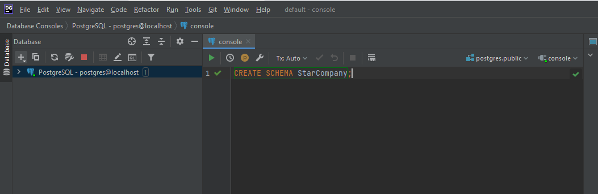
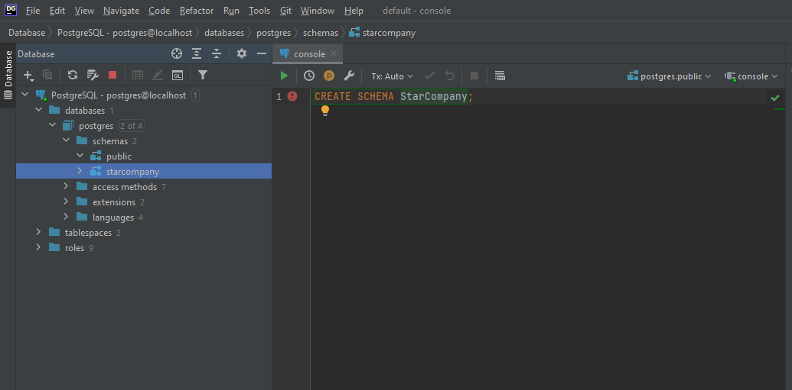

This tutorial takes you through a few different ways of interacting with a PostgreSQL database.
You will be setting up the database, inserting data, removing data again, and breaking down the database in the end.
At this point, hopefully you have already installed Postgres. If not, watch a video here on how to set it up.
You need an IDE to interact with the database. Several exists, e.g. Postgres has made their own, PGAdmin. It has, however, often been expressed by students that PGAdmin may not be a friendly IDE.
I recommend DataGrip, this is from JetBrains. It is downloaded from here: Download DataGrip
The above video should also show how to setup a connection to your Postgres database.
In the console, we will start by creating a schema.
Schemas are used similar to packages in Java, it's a way to organize your database.
Create a database schema by entering CREATE SCHEMA StarCompany; in a console window and pressing the 'Execute' button (green arrow), or by Ctrl+Enter.

Open Schemas in the browser to the left to see the change. A StarCompany schema should appear under the Schemas section.

Execute the command SET SCHEMA 'starcompany'; by writing the command in the console, selecting it and pressing the execute button. This sets StarCompany as the current schema.
The effect of this is that everything we subsequently execute will be executed against this schema.
Notice how postgresql lower cases all your names, for schemas, tables, attributes/columns. Nothing we can do about that.
Also notice, how some keywords in sql are all uppercase, like SET SCHEMA or CREATE SCHEMA.
This is not strictly required, but just an old convention to improve readability that people generally still follow.
Nowadays your IDE will syntax highlight your SQL, e.g. in the above screenshots SQL keywords are orange.
In the following, write and execute all SQL statements in the console, we have used so far.
Each statement can be highlighted, and executed in isolation.
The StarCompany wants to keep track of their employees and data related to them.
Therefore, you are going to make a table in the database with this data represented.
The table will include information about the employees' first name, last name,
which department they are attached to, their salary (per month) and a unique identification number for each person.
Execute the following SQL command to create a table for the data:
CREATE TABLE employee(
firstname varchar(15),
lastname varchar(15),
department varchar(3),
salary bigint,
employid smallint
);
Above, we have created a table called "employee", with some information about each employee.
Similar to int in Java, bigint and smallint are data types, just with various number of digits. The type varchar is your basic string.
Next up, we will add a couple of employees to the database. Do this by executing SQL commands in the console, as before.
You must insert at least 6 different employees, and they should belong to at least 3 different departments, e.g. "A1", "A2", "A3".
A department is just a 3-character code.
Remember, the data type was varchar(3), meaning a string of maximum 3 characters.
The following statement will insert a single employee:
INSERT INTO Employee (firstname, lastname, department, salary, employid)
Values ('Anders', 'Hansen', 'A2', 18900, 24);
This is Anders Hansen, employed to department "A2", with a salary of 18900 kr/month. His employee ID is 24.
Insert another five employees.
Now that we have inserted employees into the table, we just want to verify the data is actually present.
To retrieve data from tables, we use a SELECT statement. These can be somewhat advanced, depending on what kind of data you want to retrive.\
We will start simple.
Execute the following select-statement
SELECT *
FROM employee;
This will query the employee table, and retrieve everything, because of the *.
You should at the bottom in DataGrip see the result as a table with the employees.
Alternatively, you can also double click on the table in the browser view to the left, nested under the starcompany schema.
Since you created the employee table, the StarCompany management has decided they also wants to register the date, where each employee was hired.
For this, we need to make a modification to the employee table.
Execute the following statement to add another column:
ALTER TABLE employee add startdate DATE;
We are saying we want to change the table called employee. We want to add a new column (attribute/field/property) called startdate, and the data type is DATE.
The company also want the age of the employee. Add another column of type smallint to hold an employee's age.
See the answer below
ALTER TABLE employee add age smallint;
Add another 3 employees, you can reuse the previous INSERT statement, but need to modify it to match the updated table data, i.e. include age and startdate.
A date is formatted like this 'yyyy-mm-dd', so e.g. '2007-04-16'.
The first 6 employees you inserted into the database does not have age or start date, because this information was added afterwards.
So, we have to update the first employees, to fill in this data.
You can update an employee with the following statement:
UPDATE employee
SET startdate = '2007-04-16'
WHERE employid = 24;
Here we are saying, we want to set the start date of the employee with id 24.
Now, update a couple of employees with various ages and start dates.
To verify, you can query the database for data with
SELECT *
FROM employee;
Department "A1" is doing very well, and so they have all been granted a pay raise of 10%.
Use a UPDATE statement in increase the pay of all employees in department "A1" (or another one, with more than one employee) by 10%.
Give a thought yourself first, and see if you can figure it out. If you're stuck, theres a hint below:
UPDATE employee
SET salary = salary * 1.1
WHERE department='A1';
Write a statement to retrieve all employees, who work in department "A3" (or another, if you don't have A3).
Use the SELECT statement
SELECT *
FROM employee
WHERE department = 'A3';
Write a SELECT statement to retrieve all employees, who have a salary higher than 19000 (or some other number, which will return more employees).
SELECT *
FROM employee
WHERE salary > 19000;
Now, the management is too lazy to count the number of rows themselves, so they just want to know how many employees have a pay highger than 19000.
We can do that with the following statement:
SELECT COUNT(*)
FROM Employee
WHERE salary > 19000;
The COUNT(*) will just count how many rows are returned.
See if you can figure out, how to write a statement, which will calculate the average pay of all employees.
SELECT AVG(*)
FROM employee
WHEREThe company expanded april 1st, 1997, and wants to celebrate that. Make a list of employees that were hired before the expansion and get less than 21000 per month in salary (or some other number).
Use the SELECT statement. When you have more than 1 condition you separate them with an AND.
SELECT *
FROM employee
WHERE startdate < '01-04-1997'
AND salary < 21000
The company has way too many expenses and wants to get rid of all employees with a salary bigger than 300.000 per year.
The template-command for deleting:
DELETE FROM ?
WHERE ? ;
See if you can delete the specific employees.
DELETE FROM employee
WHERE salary * 12 > 300000;
In the meantime things are going much worse! All employees hired later than 2006 must be fired.
DELETE FROM employee
WHERE EXTRACT(year FROM startdate) > 2006;
Now things go completely wrong! The whole department A3 must be removed!
Delete every employee in department A3 (or some other department).
DELETE FROM employee
WHERE department = 'A3';
It was not enough. The company has gone bankrupt but owes salary for the last month to the remaining employees. Find out how much that is.
Use the select statement with SUM(salary).
SELECT SUM(salary)
FROM employee
First, delete any leftover employees:
DELETE FROM employee;
Once the table is empty, you can remove the table itself:
DROP TABLE employee;
The DROP keyword is generally used to remove anything that isn't a row in a table.
Now that the company is shut down, and all employees are fired, we might as well remove the starcompany schema too:
DROP SCHEMA starcompany;